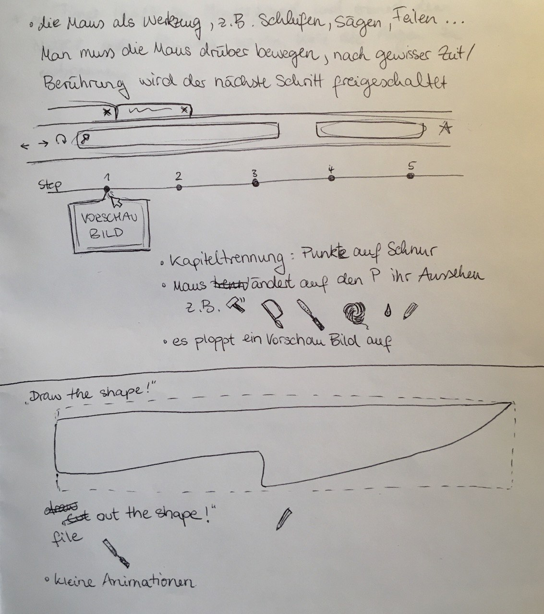

1.
Messer für unter 100€
Referenzen für das Projekt:
- Will Stelter auf Youtube Make a Knife with $100 of tools you probably already have
- Messerbau Anleitung hier wird der Prozess grundlegend erklärt in einer ansprechenden, übersichtlichen Weise. Allerdings nicht unter 100€.

Die Idee ist es, in mehreren Kapiteln durch den Prozess zu leiten. Es soll immer die Möglichkeit geben, zu einem bestimmten Punkt zu skippen oder zurück zu gehen, um Sachen zu wiederholen.
Zeichnungen, Fotos, Animation und Interaktion sollen variieren. Ich stelle mir vor, dass jeweils am Ende eines Kapitels ein Foto/Video vom Zwischenstand erscheint, während im Prozess eher Animationen/Zeichnungen als Anleitung gezeigt werden.
2.
Augentraining
Referenzen für das Projekt:
- Augengymnastik Heilpraxis
- Eye-Refresh Ein ganzheitlicher Ansatz mit Vor-Entspannung und einzelnen Kapiteln mit verschiedenen Schwerpunkten.
- Augentraining
Grafik, Animationen und Audio. Anleitungen werden gezeigt, der Schwerpunkt liegt aber bei der Audioanleitung. Es gibt viele Übungen mit geschlossenen Augen, durch die eine angenehme Stimme leiten soll. Ggf auch Videos.
Das Besondere: feiner, sauberer, übersichtlicher look der Seite und ein Timer, der aktiviert wird, nachdem man eine Übung abgeschlossen hat. Solange man die Seite offen lässt, zählt die Zeit hoch. Nach einer Stunde kommt eine Erinnerung aufgeploppt (zurückhaltend), dass es Zeit für eine Entspannung ist.